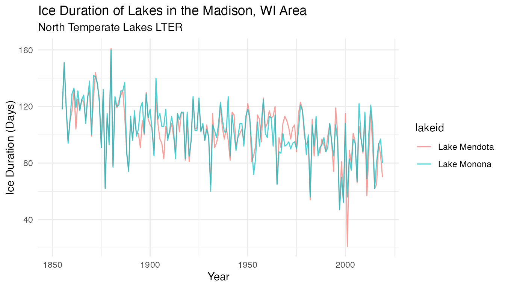
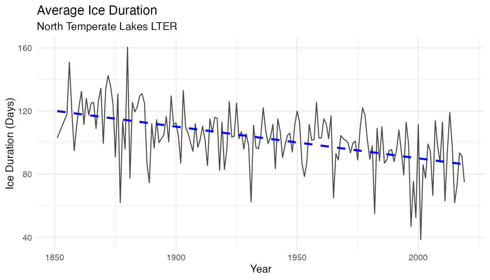

North Temperate Lakes Ice Cover (NTL)
Comparing Temperatures and Lake Ice Duration in Madison, WI since the 19th Century
Source:vignettes/ntl_icecover_vignette.Rmd
ntl_icecover_vignette.RmdIntroduction
The vignette highlights:
- How to explore time-series trends
- How to combine
group_by()withsummarise()andmutate() - How to join two datasets with
left_join() - An example of computing standardized anomalies on long time-series
- Use of the
patchworkpackage to combine plots into one figure
According to the EPA, lake ice duration can be an indicator of climate change. This is because lake ice is dependent on several environmental factors, so changes in these factors will influence the formation of ice on top of lakes. As a result, the study and analysis of lake ice formation can inform scientists about how quickly the climate is changing, and are critical to minimizing disruptions to lake ecosystems. We can examine the ice duration of Lake Mendota, Lake Monona, and Lake Wingra, three lakes in the Madison, WI area.
 |
 |
Fun Fact:
Did you know that Joni Mitchell’s album “Hejira” art is her skating on Lake Mendota in 1976 !? https://wisconsinlife.org/story/joni-mitchell-skates-on-lake-mendota-and-into-music-history/
Data Exploration
Ice Cover Duration Data
head(ntl_icecover)
#> # A tibble: 6 × 5
#> lakeid ice_on ice_off ice_duration year
#> <fct> <date> <date> <dbl> <dbl>
#> 1 Lake Mendota NA 1853-04-05 NA 1852
#> 2 Lake Mendota 1853-12-27 NA NA 1853
#> 3 Lake Mendota 1855-12-18 1856-04-14 118 1855
#> 4 Lake Mendota 1856-12-06 1857-05-06 151 1856
#> 5 Lake Mendota 1857-11-25 1858-03-26 121 1857
#> 6 Lake Mendota 1858-12-08 1859-03-14 96 1858Note that the tidyverse also provides glimpse() for a quick view of a dataset:
glimpse(ntl_icecover)
#> Rows: 334
#> Columns: 5
#> $ lakeid <fct> Lake Mendota, Lake Mendota, Lake Mendota, Lake Mendota, L…
#> $ ice_on <date> NA, 1853-12-27, 1855-12-18, 1856-12-06, 1857-11-25, 1858…
#> $ ice_off <date> 1853-04-05, NA, 1856-04-14, 1857-05-06, 1858-03-26, 1859…
#> $ ice_duration <dbl> NA, NA, 118, 151, 121, 96, 110, 117, 132, 104, 125, 118, …
#> $ year <dbl> 1852, 1853, 1855, 1856, 1857, 1858, 1859, 1860, 1861, 186…Now let’s explore the data visually. We can explore the data distribution in the different lakes using a box plot
lake_ice <-
ggplot(data = ntl_icecover %>% filter(!is.na(ice_duration)), aes(x = lakeid, y = ice_duration)) +
geom_boxplot(aes(color = lakeid, shape = lakeid),
alpha = 0.8,
width = 0.5) +
theme_minimal() +
labs(
title = "Ice Duration of Lakes in the Madison, WI Area",
y = "Ice Duration (Days)",
x = "Lake",
subtitle = "North Temperate Lakes LTER"
) +
geom_jitter(
aes(color = lakeid),
alpha = 0.5,
show.legend = FALSE,
position = position_jitter(width = 0.2, seed = 0)
)
lake_iceLooking at the time-series across the different lakes:
ice_duration <-
ggplot(data = ntl_icecover, aes(x = year)) +
geom_line(aes(y = ice_duration, color = lakeid), alpha = 0.7) +
theme_minimal() +
labs(x = "Year", y = "Ice Duration (Days)", title = "Ice Duration of Lakes in the Madison, WI Area", subtitle = "North Temperate Lakes LTER")
ice_duration
Box plots and time series plots reveal similarities across the 2 lakes. What does the trend look like for average ice cover duration in the region, based on data for the 2 lakes here?
ntl_icecover_avg <- ntl_icecover %>%
drop_na(ice_duration) %>%
group_by(year) %>%
summarise(ice_duration = mean(ice_duration)) %>%
rename(avg_ice_duration = ice_duration)
ntl_icecover_avg
#> # A tibble: 166 × 2
#> year avg_ice_duration
#> <dbl> <dbl>
#> 1 1851 103
#> 2 1855 118
#> 3 1856 151
#> 4 1857 120
#> 5 1858 95
#> 6 1859 110.
#> 7 1860 123
#> 8 1861 132.
#> 9 1862 112.
#> 10 1863 128
#> # … with 156 more rowsTime Series Plot:
avg_ice_duration <-
ggplot(data = ntl_icecover_avg %>% filter(!is.na(avg_ice_duration)), aes(x = year, y = avg_ice_duration)) +
geom_line(alpha = 0.7) +
theme_minimal() +
geom_smooth(
method = lm,
se = FALSE,
color = "blue",
linetype = "dashed"
) +
labs(y = "Ice Duration (Days)", x = "Year", title = "Average Ice Duration", subtitle = "North Temperate Lakes LTER")
avg_ice_duration
Over the 168 years of this time series, the average ice duration in North Temperate Lakes is decreasing from about 120 days to about 80 days. Let us investigate a little more what could be the environmental factors are influencing this change!
Research suggests that mean annual temperature is one of the primary factors that alter lake ice formation. We can look at the temperature data of Madison, WI found in ntl_airtemp to see if there is a corresponding change in climate that may have influenced the change in ice duration.
Note that according to the original metadata: “Daily temperature data prior to 1884 were estimated from 3 times per day sampling and biases are expected and should not be comparable with data after that time.”
Air Temperature Data
head(ntl_airtemp)
#> # A tibble: 6 × 3
#> sampledate year ave_air_temp_adjusted
#> <date> <dbl> <dbl>
#> 1 1870-06-05 1870 20
#> 2 1870-06-06 1870 18.3
#> 3 1870-06-07 1870 17.5
#> 4 1870-06-09 1870 13.3
#> 5 1870-06-10 1870 13.9
#> 6 1870-06-11 1870 15We can compute the mean annual air temperature using group_by and summarise:
ntl_airtemp_avg <- ntl_airtemp %>%
filter(year > 1884) %>% # filter out the known biased data
group_by(year) %>%
summarise(avg_air_temp_adjusted = mean(ave_air_temp_adjusted, na.rm=TRUE))
ntl_airtemp_avg
#> # A tibble: 135 × 2
#> year avg_air_temp_adjusted
#> <dbl> <dbl>
#> 1 1885 5.04
#> 2 1886 6.65
#> 3 1887 6.64
#> 4 1888 5.59
#> 5 1889 7.44
#> 6 1890 7.25
#> 7 1891 7.18
#> 8 1892 6.02
#> 9 1893 5.87
#> 10 1894 8.21
#> # … with 125 more rowsTime Series Plot:
temp_plot <-
ggplot(data = ntl_airtemp_avg,
aes(x = year, y = avg_air_temp_adjusted)) +
geom_line(alpha = 0.7) +
theme_minimal() +
geom_smooth(
method = lm,
se = FALSE,
color = "blue",
linetype = "dashed"
) +
labs(y = "Mean Air Temperature Nov-April (Celsius)", x = "Year", title = "Mean Annual Temperature", subtitle = "Madison, WI")
temp_plot
There is an upward trend in the mean annual air temperature. Let’s investigate potential relationships between air temperature and lake ice cover duration.
Investigate the relationship between ice cover duration and air temperature
To compare the ice cover duration and temperature data directly, the ntl_airtemp and ntl_icecover datasets can be joined. Since lake freezing is mostly impacted by Fall and Spring air temperatures, we will first compute the mean temperature from Nov to April (next year) to best capture the potential relationship:
# Add a column to group the Fall and Spring season into a same year, similarly to what is done when defining hydrological year
ntl_airtemp_hydro <- ntl_airtemp %>%
mutate(hydroyear = if_else(month(sampledate) < 10, year-1, year))
# Compute the average air temperature from Nov to April
ntl_airtemp_avg_winter <- ntl_airtemp_hydro %>%
filter(month(sampledate) %in% c(11:12,1:4)) %>% # filter the months from Nov to April
group_by(hydroyear) %>%
summarise(avg_air_temp_adjusted = mean(ave_air_temp_adjusted))Let us plot the average air temperature time-series computed from the cold season:
temp_plot <-
ggplot(data = ntl_airtemp_avg_winter %>% filter(!is.na(avg_air_temp_adjusted)),
aes(x = hydroyear, y = avg_air_temp_adjusted)) +
geom_line(alpha = 0.7) +
theme_minimal() +
geom_smooth(
method = lm,
se = FALSE,
color = "blue",
linetype = "dashed"
) +
labs(y = "Mean Air Temperature Nov-April (Celsius)", x = "Year", title = "Cold Season (Nov to Apr) Mean Annual Temperature", subtitle = "Madison, WI")
temp_plot
To further investigate the relationship between the air temperature during the cold season and the ice cover duration, we can join the two datasets together using left_join:
ntl_joined_avg <- ntl_icecover_avg %>%
left_join(by = c("year" = "hydroyear"), ntl_airtemp_avg_winter)
ntl_joined_avg
#> # A tibble: 166 × 3
#> year avg_ice_duration avg_air_temp_adjusted
#> <dbl> <dbl> <dbl>
#> 1 1851 103 NA
#> 2 1855 118 NA
#> 3 1856 151 NA
#> 4 1857 120 NA
#> 5 1858 95 NA
#> 6 1859 110. NA
#> 7 1860 123 NA
#> 8 1861 132. NA
#> 9 1862 112. NA
#> 10 1863 128 NA
#> # … with 156 more rowsPlot the average air temperature against the average ice cover duration:
scatter <-
ggplot(data = ntl_joined_avg ,
aes(y = avg_ice_duration, x = avg_air_temp_adjusted)) + geom_point(alpha = 0.8) +
theme_minimal() +
labs(
title = "Cold Season Mean Air Temperature and Ice Duration of Lakes",
y = "Ice Duration (Days)",
x = "Mean Air Temperature Nov-April (Celsius)",
subtitle = "North Temperate Lakes LTER"
) +
geom_smooth(
method = "lm",
color = "black",
se = FALSE,
size = 0.3
)
scatterThere is a negative correlation between the mean air temperature from November to April and the amount of time that each lake was frozen. This means that as temperature increases, the ice duration decreases.
Standardized Anomalies
Now let’s investigate how this relationship evolves over time. To compare the temperature with the ice duration on a time-series plot on a similar scale we are going to compute standardized anomalies for both parameters. We are going to split the time-series in two parts. The first 30 years will be used to compute the climatological reference (mean and standard deviation), that we will use to compare the other years against. Since the earliest year of observation for ice duration was 1851, and the earliest year of observation for temperature was 1869, we opted to compute the climatological references from 1870 to 1900.
In this example, the standardized anomalies for the temperature (and ice cover duration) are computed as follow:
\(A_{y_{stand}} = (T_{y} - \overline{T}_{clim}) / T_{SD_{clim}}\)
Where:
- \(A_{y_{stand}}\) = Standardized anomalies
- \(T_{y}\) = mean temperature for a specific cold season
- $overline{T}_{clim}) $ = Mean temperature from 1870 to 1900
- $T_{SD_{clim}} $ = Standard deviation for temperature from 1870 to 1900
Air Temperature Climatologies
Let us start with computing the climatologies and standardized anomalies for the air temperature:
# Using the first 30 years to compute the yearly climatologies
ntl_airtemp_clim <- ntl_airtemp_avg_winter %>%
filter(hydroyear > 1869 & hydroyear < 1901) %>% # taking the first 30 years of common data
summarise(clim_winter_mean_airtemp = mean(avg_air_temp_adjusted, na.rm=TRUE), # computing the climatologies
clim_winter_sd_airtemp = sd(avg_air_temp_adjusted, na.rm=TRUE)) %>%
bind_cols(filter(ntl_airtemp_avg_winter,hydroyear > 1900), .) %>% # Adding the climatology columns to the second part of the time-series
mutate(standardized_anomalies_airtemp = (avg_air_temp_adjusted - clim_winter_mean_airtemp) / clim_winter_sd_airtemp) # computing the standardized anomaliesLet’s plot the standardized anomalies time-series:
temp_plot_airtemp_anomalies <-
ggplot(data = ntl_airtemp_clim,
aes(x = hydroyear, y = standardized_anomalies_airtemp)) +
geom_bar(stat = "identity", show.legend = FALSE) +
theme_minimal() +
# scale_x_date(date_breaks = "year", date_labels = "%b") +
geom_smooth(
method = lm,
se = FALSE,
color = "blue",
linetype = "dashed"
) +
labs(y = "Standaradized Anomalies", x = "Year", title = "Air temperature standaradized anomalies", subtitle = "Madison, WI")
temp_plot_airtemp_anomalies
Ice Cover Duration Climatologies
Now doing the same computations for the ice cover duration:
# Using the first 30 years to compute the yearly climatologies
ntl_iceduration_clim_30first <- ntl_icecover_avg %>%
filter(year > 1869 & year < 1901) %>% # taking the first 30 years of common data
summarise(clim_mean_iceduration = mean(avg_ice_duration, na.rm=TRUE), # computing the climatologies
clim_sd_iceduration = sd(avg_ice_duration, na.rm=TRUE))
# compute the yearly standardized anomalies
ntl_iceduration_clim <- ntl_icecover %>%
filter(year > 1900) %>% # using the following years of the time series
add_column(clim_mean_iceduration = ntl_iceduration_clim_30first$clim_mean_iceduration,
clim_sd_iceduration = ntl_iceduration_clim_30first$clim_sd_iceduration) %>%
mutate(standardized_anomalies_iceduration = (ice_duration - clim_mean_iceduration) / clim_sd_iceduration) # computing the standardized anomalies
Let’s plot the standardized anomalies time-series:
temp_plot_iceduration_anomalies <-
ggplot(data = ntl_iceduration_clim,
aes(x = year, y = standardized_anomalies_iceduration)) +
geom_bar(stat = "identity", show.legend = FALSE) +
theme_minimal() +
# scale_x_date(date_breaks = "year", date_labels = "%b") +
geom_smooth(
method = lm,
se = FALSE,
color = "blue",
linetype = "dashed"
) +
labs(y = "Standaradized Anomalies", x = "Year", title = "Ice cover duration standaradized anomalies", subtitle = "North Temperate Lakes LTER")
temp_plot_iceduration_anomalies
Using the patchwork package, it is very easy to combine graphs together: just add them!!
temp_plot_airtemp_anomalies + temp_plot_iceduration_anomaliesor try vertically:
temp_plot_airtemp_anomalies / temp_plot_iceduration_anomaliesNote the difference of scale on the y-axis. However in both time series, there is an increase in anomalies (both in frequency and intensity) over time, suggesting the recent year are more consistently warmer and with shorter period with frozen lakes
Other things to explore:
- How are the freezing starting date and melting date changing over time?
- How does interpretation change with different methods / visualizations of smoothing (e.g. moving average)
- Predictions of ice cover duration in the future
- Comparison of how those predictions change if you pick a longer or shorter dataset (e.g. how does the coefficient compare if you use all of the data, versus just data since ~1975?)
- See the last citation below for more ideas!
Aknowledgement
Thank you to Hilary Dugan, Corinna Gries and John Magnuson for their inputs while developing this vignette. Thank you also go to Adhitya Logan for his extra work on this vignette.
Citation
Anderson, L. and D. Robertson. 2020. Madison Wisconsin Daily Meteorological Data 1869 - current ver 32. Environmental Data Initiative. https://doi.org/10.6073/pasta/e3ff85971d817e9898bb8a83fb4c3a8b (Accessed 2021-03-08).
Magnuson, J.J., S.R. Carpenter, and E.H. Stanley. 2021. North Temperate Lakes LTER: Ice Duration - Madison Lakes Area 1853 - current ver 35. Environmental Data Initiative. https://doi.org/10.6073/pasta/ab31f2489ee436beb73fc8f1d0213d97 (Accessed 2021-03-08).
Magnuson, J.J. 2021. Seeing the invisible present and place: from years to centuries with lake ice from Wisconsin to the Northern Hemisphere. Chapter 9 (243- 277) in R. B. Waide and S. E. Kingsland [eds]. The Challenges of Long Term Ecological Research: A Historical Analysis. Springer, Archimedes Series #59. https://doi.org/10.1007/978-3-030-66933-1_9 (Accessed 2022-02-14).
How we processed the raw data
Ice Cover
Download the raw data from EDI.org
library(usethis)
library(metajam)
library(tidyverse)
library(janitor)
# North Temperate Lakes LTER: Ice Duration - Madison Lakes Area 1853 - current
# Main URL: https://portal.edirepository.org/nis/mapbrowse?scope=knb-lter-ntl&identifier=33&revision=35
# Save link location for the data package:
ntl_url <-
"https://portal.edirepository.org/nis/dataviewer?packageid=knb-lter-ntl.33.35&entityid=f5bc02452cafcd461c49bd7429d8b40c"
# Download the data package with metajam
ntl_download <-
download_d1_data(data_url = ntl_url, path = tempdir())Data Cleaning
# Read in data
ntl_files <- read_d1_files(ntl_download)
ntl_ice_raw <- ntl_files$data
# Basic cleaning
ntl_icecover <- ntl_ice_raw %>%
select(-iceon, -iceoff, -season) %>%
rename(year = year4) %>%
mutate(
lakeid = recode(
lakeid,
"ME" = "Lake Mendota",
"MO" = "Lake Monona",
"WI" = "Lake Wingra"
),
year = as.numeric(year),
ice_duration = as.numeric(ice_duration),
ice_on = as.Date(ice_on),
ice_off = as.Date(ice_off),
lakeid = as.factor(lakeid),
ice_duration = replace(ice_duration, which(ice_duration < 0), NA) # change values of -999 to NA
) %>%
filter(lakeid != "Lake Wingra") %>% # too many missing data and longer ice cover duration
clean_names() # makes headers formatting more consistentAir Temperature
Download the raw data from EDI.org
library(usethis)
library(metajam)
library(tidyverse)
library(janitor)
# Madison Wisconsin Daily Meteorological Data 1869 - current
# Main URL: https://portal.edirepository.org/nis/mapbrowse?packageid=knb-lter-ntl.20.32
ntl_temps_url <-
"https://portal.edirepository.org/nis/dataviewer?packageid=knb-lter-ntl.20.32&entityid=3c7ddd692d3ac8e90bf2954a16b39e89"
# Download the data package with metajam
ntl_temps_download <-
download_d1_data(data_url = ntl_temps_url, path = tempdir())Data Cleaning
# Read in data
ntl_temps_files <- read_d1_files(ntl_temps_download)
ntl_temps_raw <- ntl_temps_files$data
# Basic cleaning
ntl_airtemp <- ntl_temps_raw %>%
select(sampledate, year4, ave_air_temp_adjusted) %>%
rename(year = year4) %>%
clean_names()